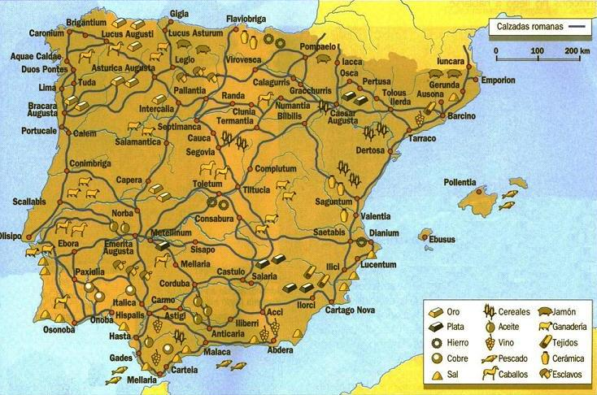

|
 |
|
Hispania la tierra de la
abundancia, el tesoro más apreciado de Roma. Tras siete siglos de relación
la huella del Imperio es imborrable. Hispania se repobló con soldados veteranos, como el caso de Emérita. Se calcula que Hispania tenía una población de unos cinco millones de habitantes.
En la ganadería destacaban los caballos astures y galaicos; los cerdos de Extremadura. En la meseta destacaba el ganado ovino dedicado a proporcionar lana de excelente calidad. En la pesca, en los mares de Hispania abundaban los atunes, calamares, congrios, ostras, etc. En el río Guadalquivir abundaban los esturiones y otras especies. EL pescado era la base de la industria conservera y del salazón hispano. Destacan las factorías de Garum del Levante Hispano. En minería y cantería, los minerales de la meseta eran extraídos para fabricar monedas, utensilios y armamento. Oro, plata, cobre, plomo. Era el bien más preciado por los romanos. La plata y el plomo abundaban en Cartagena y Linares. En Ríotinto destacaban el cobre y la plata. El oro destacaba en la provincia de la Bética, Asturias y el noroeste; un ejemplo es el yacimiento de Las Médulas. El mercurio en Almadén y el hierro en Moncayo, Cantabria y Toledo. También explotaban las canteras pétreas para realizar sus obras publicas como el acueducto de Segovia, cuyos 20.400 sillares de granito se extrajeron de la sierra de Guadarrama. En la industria textil las
telas levantinas y turdetanas eran las preferidas por los romanos, su
menor precio que las orientales o las italianas, las convirtió en un
producto muy demandado. La capa de lana celtíbera, sagum, eran muy
demandada. Uno de los condimentos más usados y valorados era la sal; Roma supo aprovechar este recurso natural y abundante en Hispania. Destacamos las salinas de Torrevieja y Santa Pola en Ilici, aun en uso.
Cabe destacar las minas de
Lapis especularis; cristal de yeso traslucido utilizado en ventanas y
decoración, en la meseta manchega, cuya explotación enriqueció la
ciudad de Segobriga. |